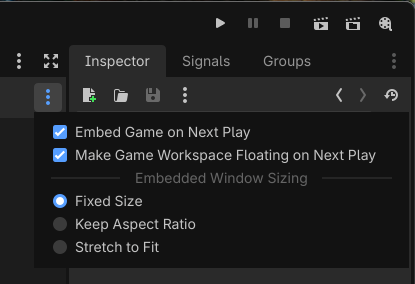
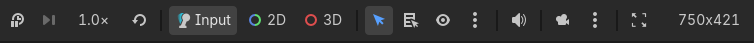
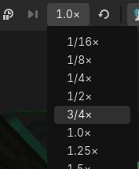

Nhúng game
Godot hỗ trợ tùy chọn chạy game ngay bên trong trình chỉnh sửa. Tính năng này được bật theo mặc định.
Ghi chú
Game luôn chạy trong một tiến trình riêng, bất kể chế độ nhúng nào được dùng. Điều này có nghĩa là nếu game bị crash, trình chỉnh sửa sẽ không bị crash theo.
Cấu hình nhúng game
Nhúng game có thể ở một trong 3 trạng thái:
Floating window (mặc định): Game chạy trong một cửa sổ riêng, với thanh Game ở phía trên cho phép bạn điều chỉnh cài đặt và chọn node trong game được nhúng. Nhấp nút màn hình chính sẽ đưa focus vào cửa sổ nổi.
Main window: Game chạy bên trong trình chỉnh sửa, với thanh Game ở phía trên cho phép bạn điều chỉnh cài đặt và chọn node trong game được nhúng. Nhấp nút màn hình chính sẽ chuyển sang tab chứa dự án đang chạy.
Disabled: Game chạy trong một cửa sổ riêng, như thể đó là một dự án đã được xuất. Không có thanh Game ở phía trên; không thể chọn node trong game được nhúng.
Để cấu hình tính năng này, hãy nhấp vào màn hình chính Game ở phía trên cùng của trình chỉnh sửa:

Truy cập màn hình chính nhúng Game
Khi đã ở màn hình chính Game, hãy nhấp vào menu thả xuống ở góc trên bên phải của thanh Game:

Menu thả xuống chế độ nhúng game
Có hai tùy chọn để cấu hình chế độ nhúng game:
Embed Game on Next Play: Nếu bật, nhúng game sẽ được kích hoạt và thanh Game có thể dùng trên game đang chạy.
Make Game Workspace Floating on Next Play: Nếu bật, game chạy trong một cửa sổ nổi. Nếu tắt, game chạy trong cửa sổ chính của trình chỉnh sửa.
Kích thước cửa sổ nhúng
Như bạn thấy trong menu thả xuống ở bên phải thanh Game, có một số lựa chọn để cấu hình cách xử lý kích thước cửa sổ nhúng. Điều này ảnh hưởng đến cả chế độ nhúng cửa sổ nổi lẫn cửa sổ chính:
Fixed Size (mặc định): Đặt kích thước viewport thành một độ phân giải cố định, như đã cấu hình trong Project Settings. Nếu cả display/window/size/window_width_override và display/window/size/window_height_override đều được đặt lớn hơn
0, giá trị ghi đè này sẽ được dùng thay thế.Keep Aspect Ratio: Kích thước viewport co giãn theo kích thước cửa sổ game, nhưng luôn tuân theo tỷ lệ khung hình được xác định bởi
width / heightnhư đã cấu hình trong Project Settings.Stretch to Fit: Kích thước viewport co giãn theo kích thước cửa sổ game, và có thể dùng tỷ lệ khung hình khác với tỷ lệ được xác định bởi
width / heightnhư đã cấu hình trong Project Settings. Cách này giống với hành vi khi tắt nhúng game.
Các tùy chọn này không có tác dụng khi nhúng game bị tắt.
Tính năng
Khi nhúng game được bật, một số tính năng có thể được điều chỉnh trong lúc dự án đang chạy bằng thanh Game ở phía trên.

Thanh Game ở phía trên cửa sổ game được nhúng
Theo thứ tự từ trái sang phải:
Tạm dừng (F9)
Tạm dừng/tiếp tục game. Khi tạm dừng, game sẽ ngừng xử lý các frame vật lý và idle, nhưng vẫn kết xuất và xử lý đầu vào. Điều này cho phép bạn chọn node trong scene và xem xét các thuộc tính của chúng trong inspector của trình chỉnh sửa khi game đang chạy.
Tiến từng frame (F10)
Chỉ khả dụng khi game đang tạm dừng. Tiến game thêm một frame, cho phép bạn xem xét trạng thái của game tại một thời điểm cụ thể. Có thể dùng để chẩn đoán các tương tác ngắn ngủi (như va chạm) vốn khó quan sát khi game chạy ở tốc độ tối đa.
Tốc độ game
Tùy chọn này là một menu cho phép điều chỉnh tốc độ game. Nếu game đặt Engine.time_scale khi chạy, giá trị đó sẽ được nhân với giá trị đặt ở đây.

Menu thả xuống tốc độ game ở bên trái thanh Game
Có thể dùng để xem các tương tác ở chế độ quay chậm, hoặc tăng tốc game đáng kể để thử nghiệm các cơ chế thường mất nhiều thời gian mới xảy ra.
Nút reset ở bên phải menu thả xuống sẽ đặt lại tốc độ game về bình thường (1.0×).
Mẹo
Khi điều chỉnh tốc độ game bằng cơ chế này, tần số tick vật lý (được xác định bởi cài đặt dự án physics/common/physics_ticks_per_second) sẽ tự động được nhân với tốc độ game. Điều này cho phép logic game chạy ở tốc độ khác mà không ảnh hưởng đến mô phỏng vật lý. Ví dụ:
Nếu bạn đặt tốc độ game là 0.5, tần số tick vật lý giảm một nửa.
Nếu bạn đặt tốc độ game là 4.0, tần số tick vật lý tăng gấp bốn.
Số bước vật lý tối đa mỗi frame cũng được tăng lên để khớp với tần số tick vật lý mới, nhưng sẽ không giảm xuống dưới giá trị mặc định khi chạy ở chế độ quay chậm.
Chế độ tương tác
Tùy chọn này điều khiển hành vi khi nhấp chuột hoặc nhấn phím trong lúc cửa sổ game được nhúng đang có focus.
Input (mặc định): Cho phép đầu vào game như bình thường.
2D: Tắt đầu vào game và cho phép chọn Node2D, Control, cũng như điều khiển camera 2D.
3D: Tắt đầu vào game và cho phép chọn Node3D cũng như điều khiển camera 3D.
Các node được chọn ở chế độ 2D và 3D có thể được xem xét trong inspector của trình chỉnh sửa, giống như khi chúng được chọn trong trình chỉnh sửa. Điều này cho phép bạn xem và sửa thuộc tính của các node trong game đang chạy.
Cảnh báo
Giống như trong cây scene Remote, các thay đổi thực hiện trên game đang chạy theo cách này sẽ không được giữ lại khi game dừng.
Để thực hiện các thay đổi được giữ lại sau khi dừng game, bạn cần chọn node trong cây scene Local của trình chỉnh sửa và sửa chúng từ đó trong lúc game đang chạy. Hãy đảm bảo được bật khi làm việc này.
Chế độ chọn
Chỉ có tác dụng nếu chế độ tương tác là 2D hoặc 3D, không phải Input.
Khi bật tùy chọn này, chế độ "hiển thị danh sách node có thể chọn tại vị trí nhấp" sẽ bị tắt. Tuy nhiên, bạn vẫn có thể thực hiện thao tác này trong chế độ chọn bằng cách dùng Ctrl + Alt + Right mouse button tại vị trí mong muốn.
Hiển thị danh sách node có thể chọn tại vị trí nhấp
Chỉ có tác dụng nếu chế độ tương tác là 2D hoặc 3D, không phải Input.
Giống như trong trình chỉnh sửa, tùy chọn này hiển thị danh sách các node có thể chọn tại vị trí nhấp. Điều này hữu ích khi nhiều node chồng lên nhau và bạn muốn chọn một node cụ thể. Khi bật tùy chọn này, chế độ chọn sẽ bị tắt.
Bật/tắt hiển thị vùng chọn
Chỉ có tác dụng nếu chế độ tương tác là 2D hoặc 3D, không phải Input.
Theo mặc định, node được chọn ở chế độ tương tác 2D hoặc 3D sẽ được làm nổi bật bằng một hình chữ nhật hoặc hộp màu cam (giống như trong trình chỉnh sửa).
Khi bật tùy chọn này, nó hiển thị dưới dạng biểu tượng con mắt nhắm. Các lần chọn sau sẽ không được làm nổi bật trong khung nhìn game, nhưng vẫn được chọn để xem trong inspector. Điều này hữu ích để tránh rối mắt.
Tùy chọn chọn nâng cao
Có hai tùy chọn nâng cao trong menu thả xuống cạnh các biểu tượng chế độ chọn:
Don't Select Locked Nodes: Khi bật, các node bị khóa trong trình chỉnh sửa sẽ không thể được chọn. Tùy chọn này mô phỏng hành vi của trình chỉnh sửa.
Select Group over Children: Khi bật, các node được nhóm sẽ được chọn thay vì từng node con của chúng. Tùy chọn này mô phỏng hành vi của trình chỉnh sửa.
Tắt âm thanh game
Khi bật, tùy chọn này tắt âm thanh game mà không ảnh hưởng đến trình chỉnh sửa hay các ứng dụng khác. Điều này đặc biệt hữu ích trên macOS và Android, vốn không có sẵn thanh trượt âm lượng riêng cho từng ứng dụng.
Ghi đè camera
Khi bật, camera sẽ ngừng đi theo camera của game. Sau đó bạn có thể di chuyển tự do camera 2D/3D bằng cách chuyển sang chế độ tương tác 2D/3D và dùng các thao tác điều hướng thông thường:
Ở chế độ tương tác 2D, dùng nút chuột giữa (hoặc Space + Left mouse button) để pan và con lăn chuột để zoom.
Ở chế độ tương tác 3D, giữ nút chuột phải và nhấn W, A, S và D để dùng freelook. Dùng nút chuột giữa để orbit, Shift + Middle mouse button để pan và con lăn chuột để zoom. Ngoài ra, bạn có thể dùng Ctrl + Minus, Ctrl + Plus và Ctrl + 0 để điều khiển trường nhìn (tương đối so với FOV của camera game).
Điều này hữu ích để xem các phần của scene không nhìn thấy được từ góc nhìn của camera game, hoặc để xem chính camera game. Khi tắt ghi đè camera, camera sẽ quay về góc nhìn của camera game.
Khi tắt ghi đè camera, vị trí và góc xoay của camera ghi đè không bị đặt lại. Điều này cho phép bạn nhanh chóng chuyển qua lại giữa camera game và camera ghi đè.
Ghi chú
Nếu ghi đè camera có vẻ không phản hồi, hãy chắc chắn rằng bạn đang ở chế độ tương tác 2D hoặc 3D. Ghi đè camera vẫn hoạt động khi ở chế độ tương tác Input, nhưng bạn sẽ không thể di chuyển camera ghi đè trong chế độ đó (trừ khi dùng chế độ ghi đè camera Manipulate From Editors như mô tả bên dưới).
Khi ghi đè camera 2D/3D, các script của dự án không biết đến việc ghi đè camera này. Hãy lưu ý điều này khi xem xét các thuộc tính phụ thuộc vào vị trí camera, vì chúng sẽ tính theo vị trí camera gốc.
Tùy chọn ghi đè camera
Reset 2D/3D Camera: Đặt lại camera 2D/3D về vị trí và góc xoay do game xác định. Lưu ý rằng camera vẫn bị cố định tại chỗ cho đến khi bạn tắt ghi đè camera.
Manipulate In-Game (mặc định): Camera ghi đè được điều khiển từ cửa sổ game. Điều này cho phép điều khiển camera mà không cần chuyển lại trình chỉnh sửa.
Manipulate From Editors: Camera ghi đè được điều khiển từ cửa sổ trình chỉnh sửa. Điều này có thể hữu ích khi dùng nhiều màn hình, nơi trình chỉnh sửa được hiển thị cạnh dự án đang chạy. Ngoài ra, khi dùng tùy chọn này, vị trí camera ghi đè có thể được ghi nhớ giữa các lần chạy dự án, vì khi bật nó sẽ dùng lại trực tiếp vị trí camera của trình chỉnh sửa.
Ghi chú
Camera ghi đè có thể kém mượt hơn khi dùng chế độ ghi đè camera Manipulate From Editors, do phải dùng giao tiếp mạng cục bộ giữa trình chỉnh sửa và game để cập nhật vị trí camera.
Hạn chế
Nhúng game có một số hạn chế bạn cần lưu ý:
Trong trình chỉnh sửa Android, nhúng game luôn dùng cửa sổ nổi. Theo mặc định, cửa sổ nổi được giữ trên cùng trình chỉnh sửa nhờ tính năng picture-in-picture của Android. Bạn có thể tắt hành vi này trên thanh Game bằng cách bỏ chọn trong menu ở bên phải thanh Game.
Không hỗ trợ thay đổi chế độ cửa sổ (ví dụ toàn màn hình) khi dùng nhúng game.
Khi dùng để bật chạy nhiều instance, chỉ instance đầu tiên dùng nhúng game. Các instance khác sẽ được tạo trong cửa sổ riêng, không có thanh Game ở phía trên.